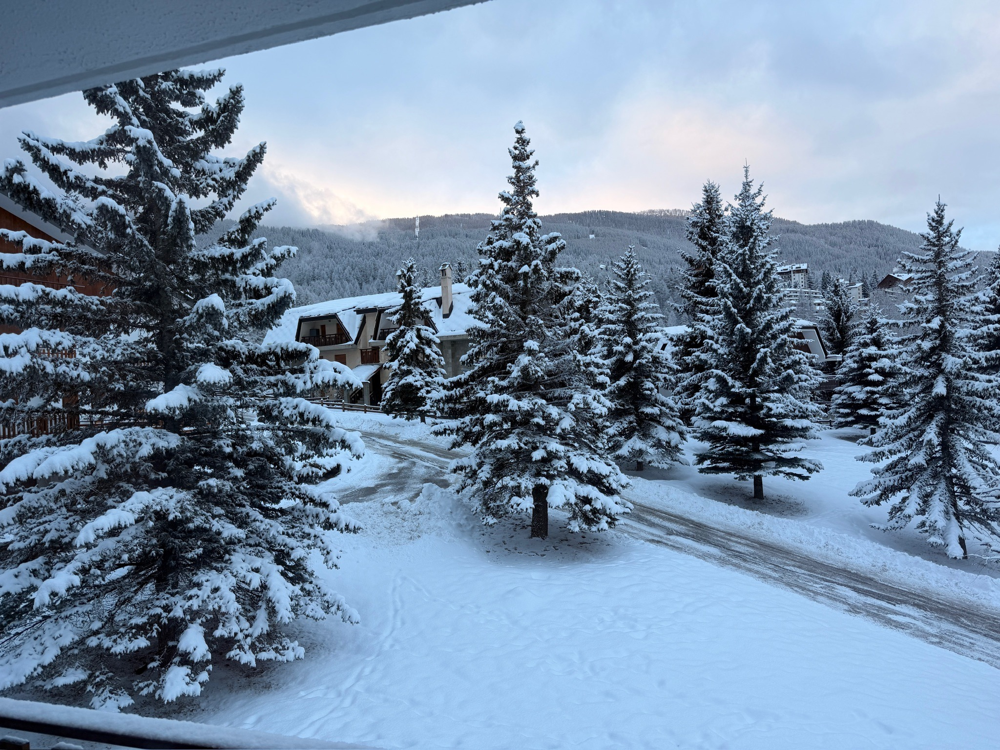
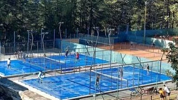
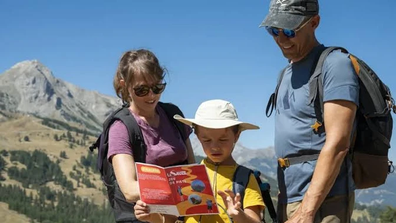
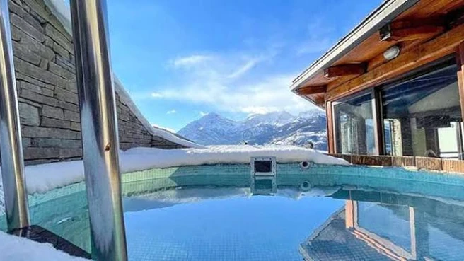
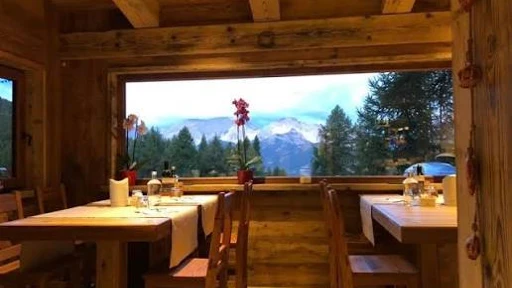
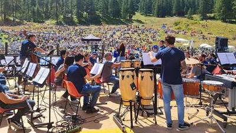
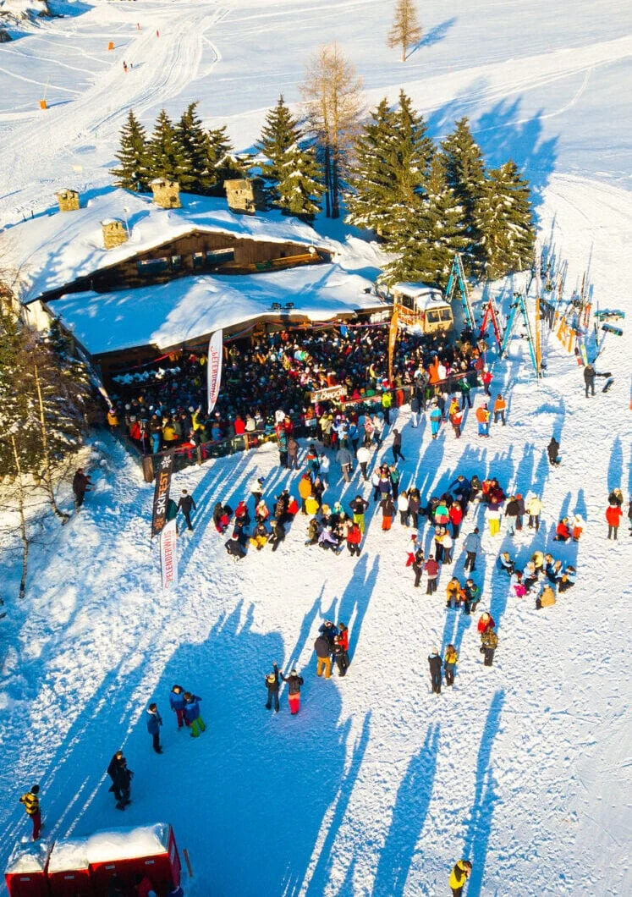

Inverno
InvernoUna giornata perfetta sugli sci
Sci da Jouvenceaux o Clotes (5–8 minuti indicativi in auto). Verifica parcheggi e ritrovo scuola sci. Pranzo a Sportinia, après-ski e rientro al caldo.
Informazioni ↗Svegliati. Esplora. Torna a casa. Quando fuori piove o nevica, ritrova il piacere di stare insieme: film, giochi da tavolo, tisana, musica Sonos e luci calde. Quando splende il sole, parti per una nuova avventura.

Scegli come vuoi vivere la montagna. Le attività stagionali e gli eventi vanno confermati con gli operatori.
InvernoSci da Jouvenceaux o Clotes (5–8 minuti indicativi in auto). Verifica parcheggi e ritrovo scuola sci. Pranzo a Sportinia, après-ski e rientro al caldo.
Informazioni ↗
InvernoPasseggiate invernali, slittino nelle aree consentite, ciaspole con guida e pranzo in quota.
Informazioni ↗ Estate e sport
Estate e sportBike park di Sauze, e-bike e Strada dell’Assietta. Verifica impianti, difficoltà e restrizioni di accesso. Faure Sport e 3Sixty per il noleggio.
Informazioni ↗
Estate e sportPin Court a Sauze; scopri anche le strutture di Sestriere e Bardonecchia. Verifica apertura, lezioni e prenotazione.
Informazioni ↗
FamigliaCentri estivi e camp tennis o multisport: Pin Court, PlayOff Sport & Avventura, Snowmaxx. Chiedi se accettano iscrizioni diurne, età e date.
Informazioni ↗ Famiglia
FamigliaAdventure Village, passeggiate, paintball e attività sulla neve: verifica operatori, età minima e apertura.
Informazioni ↗RelaxFilm sulla LG OLED, giochi da tavolo, tisana, caffè, Sonos e luce calda. Il piacere di non avere programmi.
Informazioni ↗
RelaxScopri spa e massaggi a Sauze e Durancia a Montgenèvre. Verifica accesso esterni, età e prenotazione.
Informazioni ↗
GastronomiaCapanna Mollino, Capanna Kind, Chalet Capannina, Ciao Pais e Clot Bourget: scegli il rifugio in base alla pista e alle aperture.
Informazioni ↗ Natura
NaturaGran Bosco di Salbertrand, larici, passeggiate e osservazione rispettosa della fauna. Scegli percorsi adatti e verifica condizioni.
Informazioni ↗ Natura
NaturaOsserva il cielo da un luogo accessibile e sicuro, oppure dal balcone. Porta abiti caldi e controlla nuvole e fase lunare.
Informazioni ↗ Cultura
CulturaMontgenèvre e Briançon: passeggiate, fortificazioni Vauban e gastronomia. Verifica documenti e viabilità.
Informazioni ↗ Cultura
CulturaSestriere, Cesana, Claviere, Pragelato, Bardonecchia, Oulx, Usseaux e Valle Argentera: borghi, sport e natura.
Informazioni ↗ Cultura
CulturaCapanna Mollino, Forte di Exilles e Fenestrelle, architettura alpina e memoria olimpica.
Informazioni ↗ Estate e sport
Estate e sportAssietta, Colle delle Finestre e Moncenisio in bici o moto, controllando ordinanze, meteo e condizioni stradali.
Informazioni ↗
CulturaConcerti estivi a Sportinia, musica nei rifugi e spettacoli in paese: consulta il programma ufficiale.
Informazioni ↗ Gastronomia
GastronomiaMercati, pane, formaggi e prodotti tipici; consulta l’elenco locale di negozi.
Informazioni ↗
InvernoUna pausa dopo l’ultima discesa, aperitivo in quota o in paese; controlla orari e ultimo impianto.
Informazioni ↗Idee stagionali, non date confermate. Consulta i calendari ufficiali.
Cesana–Sestriere · Bardonecchia · Sestriere
| Gennaio · Sci e neve | Eventi e aperture ↗ |
|---|---|
| Febbraio · Carnevale e famiglia | Eventi e aperture ↗ |
| Marzo · Sci al sole | Eventi e aperture ↗ |
| Aprile · Primavera e fine stagione sci | Eventi e aperture ↗ |
| Maggio · Borghi e prime passeggiate | Eventi e aperture ↗ |
| Giugno · Camp estivi e sport | Eventi e aperture ↗ |
| Luglio · Cesana–Sestriere, MTB e musica | Eventi e aperture ↗ |
| Agosto · Concerti a Sportinia, mercati e stelle | Eventi e aperture ↗ |
| Settembre · Sagre e patata di montagna | Eventi e aperture ↗ |
| Ottobre · Foliage e sapori | Eventi e aperture ↗ |
| Novembre · Relax e cultura | Eventi e aperture ↗ |
| Dicembre · Natale e apertura impianti | Eventi e aperture ↗ |
Arriva in treno a Oulx e verifica i collegamenti autobus per Sauze; in auto percorri la A32 o gli itinerari transfrontalieri aperti. Per gli ospiti della Cabin la ricarica elettrica è inclusa nel posto auto coperto. In estate le mattine fresche e le serate più miti invitano a vivere all’aperto.
Treni · Mobilità locale